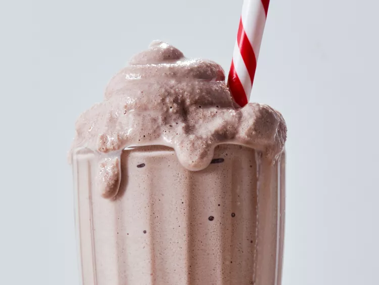

Wendy’s Frosty fans, look no further. We tried a viral DIY version of the
frozen favorite, and it’s well worth giving a spin—no ice cream machine
needed.
Ingrdients
- 2 cups chocolate milk
- 1 cup frozen whipped topping (do not thaw)
- 1/4 cup whole milk
- 1 tablespoon sweetened condensed milk
Steps
-
Pour chocolate milk into ice cube trays and freeze until solid, at least
4 hours and up to 24.
-
Process frozen milk cubes, frozen whipped topping, whole milk, and
sweetened condensed milk in a food processor until smooth. Serve
immediately or freeze in an airtight container up to 1 week.